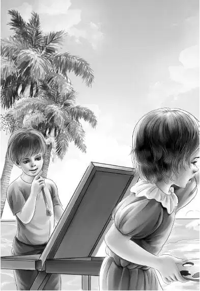
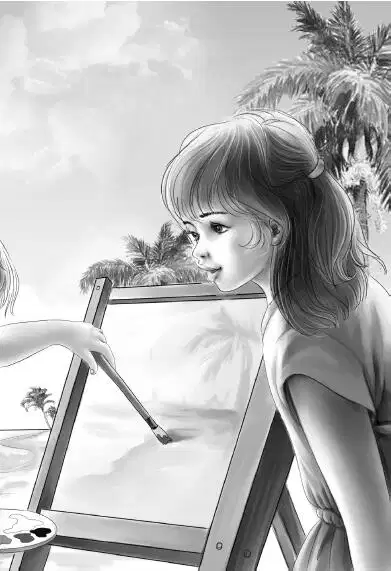

Chapter 13 Surprise for Violet
星期一，弗莱先生在村里挨家挨户地登门拜访。所有的孩子得知这个消息后，都忍不住谈论起来。奥登家的孩子们几乎没法上课了。就连课间休息大家也没心思做游戏，只想着聊天。
“噢，我妈有根很旧的金针，上面还带着狮子头呢。”一个女孩说道，“钱贩子肯定会买下它，连带着那枚石榴戒指。”
“我奶奶还有一箱子旧卡片，都是情人节的礼卡。”女孩的哥哥说道，“钱贩子会全部都买下来的。”
“我爸有个很古老的锡盘，从前是用来切肉用的。”托米说道。
“会不会是锡镴做的？”维莉问道。
“锡镴？不知道。我从来没听说过。”
“我们家还有个旧沙漏，以前在北港教堂里用过的。”艾迪说道。
“我家有个玻璃书镇，上面印满了花纹，钱贩子喜欢得不得了。”另一个孩子说道。
豪尔突然站了起来，他登上一块石头，对大家说道：“伙伴们，听我说两句！你们要想谈论钱贩子的事情，有整整一下午的时间呢。今天上午是用来学习的，大家可以利用这个机会好好地学些东西。他们讲课的方法这么有趣，恐怕咱们以后再也遇不到这种老师了。再说，他们在这里待不了多久的。大家还是闭上嘴巴学习吧。我想说的就这些。”
一些孩子为豪尔的话鼓起了掌，大家很快就忙碌了起来，上午的时间飞快地过去了。
“现在开始学画画啦。”维莉宣布道，“咱们可以到海滩上去画。”
梅里和豪尔比其他孩子都要兴奋。“教我画海港吧——就像真正的画家那样！”梅里央求道。
“我会尽力帮助你的。”维莉保证道。
孩子们把绘画用品拿到了海滩上，奥登兄妹给他们讲了讲绘画入门技巧。维莉则教梅里和豪尔用铅笔素描海港，只强调了一点：“要注意，码头入海处，线条要逐渐汇拢才行。”
维莉又教给大家正确握画笔的姿势，便宣布道：“现在可以开始啦，大家随意画吧！”


不一会儿，杰西和亨利也站到维莉身边，看着莫斯家的姐弟俩画画。
豪尔和梅里把少量蓝色和绿色的油彩混在一起，调和成海水的颜色，紧接着，他们寥寥几笔就把小船画得活灵活现，很难以置信这居然是姐弟俩第一次使用水彩。
维莉很快得出了结论——这两个孩子天生就有画画的天分，这一点，她是永远也达不到的。不仅如此，姐弟俩还有各自独特的风格。
“噢，这里该用紫色了。”梅里边说边在码头下方添了几笔紫色和黑色，笔触十分豪放。
“好漂亮！”杰西叫了起来。
豪尔的作品同样优秀，但风格不同。
“可以把你们的画拿给我爷爷看吗？”维莉向姐弟俩征询道。
“我可以再画一幅！”豪尔叫道，“我知道怎样画能让大海看起来像是在经历风暴。”
正在这时，奥登先生来到了海滩上，想看看孩子们的情况。维莉赶紧跑过去，把两幅画展示给爷爷。
爷爷啧啧赞道：“这是水彩画的吗？真是漂亮极了！两个小画家应该去艺术学校才对——当然，不是现在，是将来。”
上午的课程结束了，钟声已经响起。亨利知道，班尼会很快锁好教室，回到海滩上来。
“班尼老弟准是惦记着午饭呢。”亨利说着，大笑起来。
“我也是。”奥登先生说道，“希望班尼早点过来。”
吃饭时，维莉缓缓地说道：“我想，应该让格雷女士看看那两幅画。”
“我也这么认为。”班尼说，“她准会喜欢的。”
吃过午饭，一家人带着两幅画出发了。大家爬到崖顶，按响了门铃。
艾娃开了门，满面笑容地说道：“只要是你们来，我都用不着通报了。快请进吧。”
见到奥登一家，格雷女士发自内心地笑了起来——他们还是头一次看到她这么会心的笑容。
“弗莱的事情怎么样了？”她问道。
“他算是摊上事儿了。”爷爷说道，“他胆子太大，太过分了。”
“那些书呢？”
“现在还没查到书的下落。”奥登先生承认道。
“肯定能找回来的。”班尼说，“因为……”
亨利看了弟弟一眼，班尼立刻顿住了。
“怎么啦？你刚才想说什么？”格雷女士追问道。
“嗯——我是想说，这事不难。”班尼说，“因为我们一直都在监视弗莱。”班尼并不确定格雷女士是否认识那位“英国客人”。
“其实，我们过来是想让您看看两幅水彩画。”奥登先生说道，“我们很想听听您的意见。”说着，他把两幅画递给了格雷女士。
“是海港。”格雷女士说道，“画得好极了！这是一个人画的还是两个人画的？”
“两个。”维莉的眼睛闪闪发亮，“绘画者是豪尔和梅里——莫斯家的双胞胎。”
“豪尔和梅里？”格雷女士叫道，“他们从来都没学过画画啊！”
“正是如此，”爷爷说道，“所以说这姐弟俩很有天赋！”
“他们只看到过三幅画。”杰西说道，“有两幅是很久前一个画家画的海港和他们家的屋子，还有一幅就是教室里的华盛顿画像。”
“所以他们才有自己独特的风格。”格雷女士点了点头说。
“我们八月一号就得回家了。”维莉说道，“可姐弟俩必须有人教下去才行。”
格雷女士目不转睛地望着维莉。“我来教好了。”短短一句话后，她似乎不知道接下来该如何表达。良久，她终于又开口了：“你们回家以后，我会亲自去学校讲课的。”
“您亲自去讲？”杰西叫了起来，“您的身体受得了吗？”
“没问题！”格雷女士说，“尽管姐弟俩近在咫尺，可要不是你们来了，怕是没人挖掘出他们的绘画天赋——我是一直宅在家里写书，村子里其他人也不可能发现。”
接下来，奥登一家起身告辞了，格雷女士把大家送到了门口，爷爷向她点头致意。
“奥登先生，”格雷女士说道，“您的维莉发掘了两个小画家，而您的班尼，同样也把我给‘挖掘’出来了！”